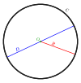

diameter
property

Source: Wikipedia
Wikipedia Page (Something wrong with this association? Let us know.)
Wikidata Page (Something wrong with this association? Let us know.)
Occurs in:
- atmosphere_hydrometeor__diameter
- automobile_engine_cylinder__diameter
- automobile_engine_cylinder_piston__diameter
- automobile_tire__diameter
- automobile_wheel__diameter
- drainage-basin_boundary__diameter
- drainage-basin_channel-network_graph__diameter
- drainage-basin_channel-network_graph__diameter
- black-bear~alaskan_head__mean_of_diameter
- channel_x-section__diameter
- river-delta_channel~main_entrance_water_sediment_sand_grain__mean_of_diameter
- river-delta_front_sediment_grain__mean_of_diameter
- river-delta_plain_boundary__diameter
- rooted-tree-graph__diameter
- impact-crater_circle__diameter
- mars__mean_of_diameter
- model_grid_cell__diameter
- projectile__diameter
- projectile_impact-crater__diameter
- projectile_shaft_x-section__diameter
- sea_bottom_sediment_grain__mean_of_diameter
- snowpack_core__diameter
- snowpack_grains__mean_of_diameter
- square__diameter
- tree~bluejack-oak_trunk__diameter
- model_grid_dual-cell__diameter
- model_grid_primary-cell__diameter